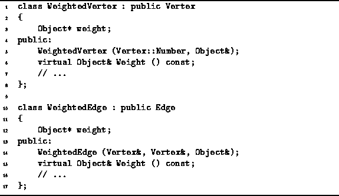

Data Structures and Algorithms
with Object-Oriented Design Patterns in C++
Data Structures and Algorithms
with Object-Oriented Design Patterns in C++An edge-weighted graph is a graph in which each edge has been assigned a weight. Similarly, a vertex-weighted graph is a graph in which each vertex has been assigned a weight. In such graphs, the quantity represented by a weight depends on the application.
Since a graph is a container
that contains specifically vertices and edges,
it is not necessary to introduce new graph classes to represent
edge-weighted and vertex-weighted graphs.
Instead, we introduce two classes,
WeightedVertex and WeightedEdge.
By using instances of these new classes
together with the existing graph classes,
we can create arbitrary edge-weighted and vertex-weighted graphs.
Program  contains the declarations
of the WeightedVertex
and WeightedEdge classes.
contains the declarations
of the WeightedVertex
and WeightedEdge classes.

Program: WeightedVertex and WeightedEdge Class Definitions
Since the WeightedVertex class is derived from the Vertex class, instances of the former can be used wherever the latter is expected. Therefore, we can create a vertex-weighted graph simply by inserting weighted vertices into an instance of one of the graph implementations discussed in the preceding section.
The WeightedVertex<T> class contains a single member variable called weight which is a pointer to an Object instance. Therefore, any object type can be used as the weight. The constructor sets the weight to a given value, and the member function Weight is used to access the weight.
The WeightedEdge<T> class is implemented similarly. I.e., weighted edge instances can be used wherever an edge is expected. By inserting weighted edges into a graph, we get an edge-weighted graph. Clearly, if the application demands it, it is possible to use both weighted vertices and weighted edges in the same graph.
 Copyright © 1997 by Bruno R. Preiss, P.Eng. All rights reserved.
Copyright © 1997 by Bruno R. Preiss, P.Eng. All rights reserved.